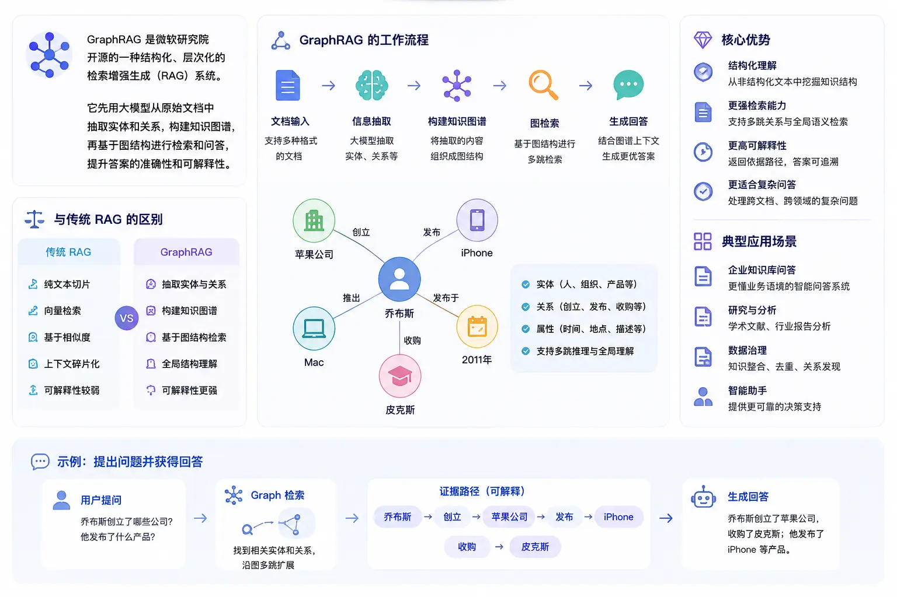
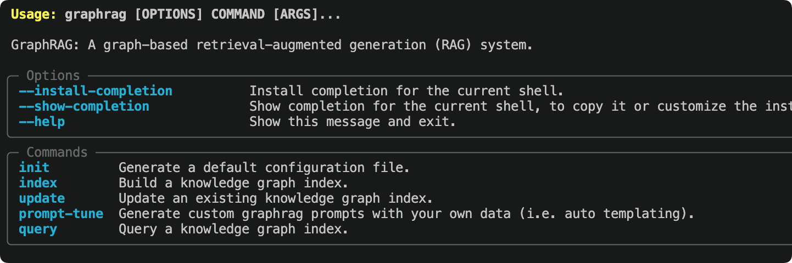

GraphRAG 入门教程
GraphRAG 是微软研究院开源的一种结构化、层次化的检索增强生成（RAG）系统，与传统 RAG 使用纯文本向量检索不同，GraphRAG 先用大模型从原始文档中抽取出实体和关系，构建知识图谱，再基于图结构进行检索和问答。
本教程面向零基础读者，带你从安装开始，完整走完 文档 → 知识图谱 → 查询问答 的全流程，模型使用 qwen-plus，Embedding 使用阿里云通义的 text-embedding-v4。

什么是 GraphRAG
要理解 GraphRAG，先要理解它比传统 RAG 好在哪里。
传统 RAG 的局限
传统 RAG（Baseline RAG）的工作流程是：将文档切成小块 → 生成向量 → 问题来了时用向量相似度检索最相关的几块 → 送给模型生成答案。
这个方案对"精确检索"类问题效果不错，但在两类场景下表现较差：
- 跨文档关联推理：当答案需要把分散在不同文档里的信息串联起来时，向量相似度无法表达这种"关系"。例如"A 公司的 CEO 和 B 公司的创始人有什么交集？"
- 全局性摘要问题：当问题要求对整个语料库做宏观总结时，几块文本片段根本无法覆盖全貌。例如"这批财报文件里最核心的风险点是什么？"
GraphRAG 如何解决这两个问题
GraphRAG 的核心思路是：不直接检索文本块，而是先建立一张知识图谱，再基于图结构检索。
整个过程分为两个阶段：
| 阶段 | 做什么 | 输出什么 |
|---|---|---|
| 索引（Index） | 用 LLM 读取文档，抽取实体（人、地点、组织等）和关系，构建知识图谱；再用 Leiden 算法对图进行层次聚类，为每个社区生成摘要 | 知识图谱 + 社区摘要 + 向量索引 |
| 查询（Query） | 用户提问时，根据问题类型选择不同检索策略，将图谱数据、社区摘要、原始文本片段一起注入 LLM 上下文，生成答案 | 带来源依据的结构化回答 |
GraphRAG 的索引阶段需要调用大量 LLM API，对每一段文本都做实体抽取和摘要，Token 消耗远高于传统 RAG。建议初次使用时先用小文档（几千字以内）测试流程，确认无误后再处理大规模语料。
四种查询模式对比
| 查询模式 | 检索策略 | 适合的问题类型 | 资源消耗 |
|---|---|---|---|
| Global Search | Map-Reduce 遍历所有社区摘要 | 全局性、总结性问题，如"这批文档的核心主题是什么" | 高（并发调用多次 LLM） |
| Local Search | 从相关实体出发，扩展邻居和关联文本 | 针对特定实体的问题，如"某人物的主要关系网络" | 中 |
| DRIFT Search | Local Search + 社区信息引导的迭代追问 | 需要宽广上下文的实体相关问题，兼顾深度与广度 | 中高 |
| Basic Search | 标准向量相似度（与传统 RAG 相同） | 简单的精确检索，用于对比效果 | 低 |
环境要求
在开始之前，请确认你的环境满足以下条件。
| 依赖 | 版本要求 | 说明 |
|---|---|---|
| Python | 3.10 ~ 3.12 | 官方支持范围，3.13 暂不支持 |
| pip | 最新版 | 建议先 pip install --upgrade pip |
| 阿里云百炼 API Key | — | 在 bailian.console.aliyun.com/ 申请 |
| 磁盘空间 | ≥ 2GB | 索引产物（Parquet 文件、向量库）会占用较多空间 |
安装
GraphRAG 发布在 PyPI，建议在 Python 虚拟环境中安装，避免污染系统环境。
创建项目目录并初始化虚拟环境
mkdir graphrag_demo cd graphrag_demo python -m venv .venv
也可以使用 uv 命令来指定 Python 版本：uv venv --python 3.12
激活虚拟环境
macOS / Linux：
source .venv/bin/activate
Windows：
.venv\Scripts\activate
安装 GraphRAG
pip install graphrag
安装完成后验证：
graphrag --help
会输出一些 graphrag 命令信息，输出类似：

GraphRAG 会自动安装 LiteLLM、LanceDB、pandas、numpy 等依赖。首次安装时间较长（通常 1~3 分钟），请耐心等待。
初始化工作区
运行 graphrag init 命令，GraphRAG 会在当前目录生成配置文件和目录结构。
graphrag init
会提示我们设置模型，直接回车默认就好了，后面再修改：
Specify the default chat model to use [gpt-4.1]: Specify the default embedding model to use [text-embedding-3-large]:
初始化时会提示你输入默认的 Chat 模型和 Embedding 模型，可以暂时直接按 Enter 跳过，后面我们会手动修改 settings.yaml。
初始化完成后，目录结构如下：
graphrag_demo/ ├── .env # 存放 API Key 环境变量 ├── settings.yaml # 核心配置文件 ├── input/ # 存放待处理的文本文件 ├── output/ # 索引产物输出目录（自动生成） └── prompts/ # Prompt 模板目录（自动生成）
每次升级 GraphRAG 小版本后，建议重新运行
graphrag init --force刷新配置格式，否则可能因配置结构变更导致运行报错。注意该命令会覆盖现有的settings.yaml和 prompts，建议先备份。
准备测试文档
GraphRAG 支持 .txt、.csv、.json 格式的文档，所有待处理文件放在 input/ 目录下。
我们使用官方推荐的测试文档——查尔斯·狄更斯的《圣诞颂歌》，直接从 Project Gutenberg 下载：
curl https://static.jyshare.com/download/pg24022.txt -o ./input/book.txt
如果网络不通，也可以自己创建一个中文测试文本，内容越丰富（含大量人物、地点、事件关系），GraphRAG 的知识图谱效果越明显：
文件放在 input 目录下，文件名为 demo.txt：
SpaceX 太空探索技术公司成立于 2002 年，由埃隆·马斯克（Elon Musk）在美国加利福尼亚州霍桑市创办。 公司目标是大幅降低太空运输成本，最终实现人类移民火星。 马斯克早年联合创立了 PayPal，2002 年以 15 亿美元出售给 eBay，随后将个人资产投入 SpaceX。 联合创始人中，汤姆·穆勒（Tom Mueller）担任推进系统首席设计师，主导了 Merlin 和 Raptor 发动机的研发。 格温·肖特维尔（Gwynne Shotwell）于 2002 年加入，2008 年起担任总裁兼 COO，负责公司日常运营和商业拓展。 2008 年，猎鹰 1 号（Falcon 1）在经历三次失败后首次成功入轨，成为首个由私营公司研制的液体轨道火箭。 2010 年，猎鹰 9 号（Falcon 9）首飞成功，同年龙飞船（Dragon）完成首次商业发射与回收。 2012 年，龙飞船成为首个对接国际空间站的商业航天器。 2015 年 12 月，猎鹰 9 号一级火箭首次实现陆地垂直回收，开创了火箭重复使用的新纪元。 此后 SpaceX 累计完成超过 200 次火箭回收，单枚助推器最高复用次数达到 20 次以上。 2020 年，载人龙飞船（Crew Dragon）将 NASA 宇航员送入国际空间站，标志着商业载人航天时代的开始。 Starlink 星链项目自 2019 年启动，截至 2024 年已在轨部署超过 5000 颗卫星，覆盖全球超过 60 个国家和地区。 Starship 星舰是 SpaceX 正在研发的超重型运载系统，由超重助推器（Super Heavy）和星舰飞船组成， 设计目标为完全可重复使用，近地轨道运力超过 100 吨，是 NASA 阿尔忒弥斯登月计划的指定着陆器。 竞争对手方面，SpaceX 主要面临来自蓝色起源（Blue Origin）和联合发射联盟（ULA）的压力。 蓝色起源由亚马逊创始人杰夫·贝索斯创立，专注亚轨道旅游和重型火箭 New Glenn 的研发。 ULA 由洛克希德·马丁和波音合资成立，长期承担美国军方卫星发射任务。

配置 qwen-plus 与 Embedding 模型
这是整个教程最关键的步骤，需要修改 .env 和 settings.yaml 两个文件。
第一步：配置 API Key
打开 .env 文件，填入你的 API Key：
实例
# 阿里云百炼 API Key
DASHSCOPE_API_KEY=sk-your-dashscope-api-key-here
第二步：修改 settings.yaml
打开 settings.yaml，将整个内容替换为以下配置。
GraphRAG 2.x 使用 LiteLLM 统一调用各家模型，model_provider: openai 配合 api_base 即可将请求转发到任意 OpenAI 兼容接口：
completion_models:
default_completion_model:
model_provider: openai
model: qwen-plus # 中文抽取稳定，成本低于 qwen-plus
auth_method: api_key
api_key: ${DASHSCOPE_API_KEY}
api_base: https://dashscope.aliyuncs.com/compatible-mode/v1
call_args:
temperature: 0 # 提高结构化稳定性
max_tokens: 4096
retry:
type: exponential_backoff
max_retries: 5
base_delay: 2
embedding_models:
default_embedding_model:
model_provider: openai
model: text-embedding-v4 # 通义向量模型
auth_method: api_key
api_key: ${DASHSCOPE_API_KEY}
api_base: https://dashscope.aliyuncs.com/compatible-mode/v1
retry:
type: exponential_backoff
max_retries: 5
input:
type: text
input_storage:
type: file
base_dir: input
chunking:
type: tokens
size: 600 # 中文推荐 500~800
overlap: 100
encoding_model: o200k_base
output_storage:
type: file
base_dir: output
reporting:
type: file
base_dir: logs
cache:
type: json
storage:
type: file
base_dir: cache
vector_store:
type: lancedb
db_uri: output/lancedb
embed_text:
embedding_model_id: default_embedding_model # 注意不要带逗号
batch_size: 10 # 百炼 embedding 单次最多10条
batch_max_tokens: 6000
concurrency: 1 # 避免并发触发限流
extract_graph:
completion_model_id: default_completion_model
entity_types: [] # 自动识别实体
max_gleanings: 3 # 提高关系补抽成功率
summarize_descriptions:
completion_model_id: default_completion_model
max_length: 500
cluster_graph:
max_cluster_size: 20 # 降低社区数量
extract_claims:
enabled: false
community_reports:
completion_model_id: default_completion_model
max_length: 1500
max_input_length: 4000 # 防止生成阶段过慢
snapshots:
graphml: true # 导出图结构
embeddings: false
local_search:
completion_model_id: default_completion_model
embedding_model_id: default_embedding_model
top_k_entities: 10
global_search:
completion_model_id: default_completion_model
map_max_length: 500
reduce_max_length: 1500
关于 Qwen 的 JSON 输出：GraphRAG 在实体抽取阶段需要模型稳定返回 JSON 格式。Qwen 支持 JSON 模式，将
temperature设为 0 可以进一步提高输出稳定性，减少解析失败的概率。如果仍然出现 JSON 解析错误，可以尝试在call_args中添加response_format: {type: json_object}。
开始索引
配置完成后，运行索引命令，GraphRAG 会自动读取 input/ 目录下的所有文件，调用 qwen-plus 进行实体抽取、关系识别、摘要生成，最终构建完整的知识图谱。
graphrag index
你会看到类似如下的进度输出：
⠹ GraphRAG Indexer ├── Loading Input (text) - 1 files loaded ├── create_base_text_units ├── extract_graph │ └── Entity Extraction: 100%|████████████| 12/12 [02:34<00:00] ├── summarize_descriptions ├── cluster_graph ├── community_reports └── generate_text_embeddings All workflows completed successfully.
索引完成后，output/ 目录下会生成一系列 Parquet 文件：
| 文件 | 内容 |
|---|---|
entities.parquet | 所有抽取出的实体（名称、类型、描述、向量） |
relationships.parquet | 实体间的关系（源实体、目标实体、关系描述、权重） |
communities.parquet | Leiden 聚类生成的社区（层次结构） |
community_reports.parquet | 每个社区的摘要报告（Global Search 的核心数据） |
text_units.parquet | 原始文本块（Local Search 的参考来源） |
lancedb/ | 向量数据库，存储各类实体和文本块的向量 |
索引时间参考：对于一篇几千字的中文文档（约 10~20 个文本块），使用 qwen-plus 大约需要 3~10 分钟；对于 10 万字以上的大型文档集，可能需要数小时。建议先用小文档跑通流程，再处理大规模数据。
执行查询
索引完成后，就可以对知识图谱进行查询了。GraphRAG 提供 CLI 和 Python API 两种方式。
CLI 查询
全局搜索（适合宏观性问题）：
graphrag query "文档中涉及的主要组织和人物有哪些？它们之间有什么关系？"
本地搜索（适合针对特定实体的问题），加 --method local：
graphrag query "SpaceX 公司的主要业务和合作伙伴有哪些？" --method local
DRIFT 搜索（兼顾深度与广度）：
graphrag query "埃隆·马斯克的职业背景和主要贡献是什么？" --method drift
基础向量搜索（与传统 RAG 对比）：
graphrag query "Starship 星舰的设计目标和能力是什么？" --method basic
Python API 查询
在代码中调用 GraphRAG 查询，适合集成到应用程序中。
实例
# 使用 GraphRAG Python API 进行查询
import asyncio
from graphrag.api import GraphRagConfig, search
async def run_query():
# 加载配置文件（从当前目录读取 settings.yaml）
config = GraphRagConfig.from_yaml("settings.yaml")
# ── 全局搜索示例 ──────────────────────────────
print("=" * 60)
print("【Global Search】全局性问题")
print("=" * 60)
global_result = await search(
config=config,
query="文档中涉及的主要公司和人物关系网络是怎样的？",
method="global", # 使用 Global Search
)
print(global_result.response)
print()
# ── 本地搜索示例 ──────────────────────────────
print("=" * 60)
print("【Local Search】针对特定实体的问题")
print("=" * 60)
local_result = await search(
config=config,
query="SpaceX 公司的创始团队背景和主要产品是什么？",
method="local", # 使用 Local Search
)
print(local_result.response)
print()
# 查看检索到的来源信息（可选）
if hasattr(local_result, "context_data"):
entities = local_result.context_data.get("entities", [])
print(f"检索到相关实体数量：{len(entities)}")
if __name__ == "__main__":
asyncio.run(run_query())
python query_demo.py
============================================================ 【Global Search】全局性问题 ============================================================ 根据文档内容，主要涉及以下公司和人物关系网络： **公司层面：** - SpaceX 公司：主要角色，覆盖商业发射、载人航天、卫星互联网三大方向 - NASA：重要合作伙伴，阿尔忒弥斯登月计划 Starship 着陆器供应商 - 蓝色起源 / 联合发射联盟：主要竞争对手 **人物层面：** - 马斯克（创始人）：PayPal 联合创始人，SpaceX CEO 兼首席工程师 - 汤姆·穆勒（联合创始人）：推进系统首席设计师，Merlin 和 Raptor 发动机之父 - 格温·肖特维尔：总裁兼 COO，负责公司商业运营 **关键关系：** SpaceX 与 NASA 于 2020 年建立战略合作关系， 三家公司（SpaceX、蓝色起源、ULA）在商业航天发射市场形成竞争格局... ============================================================ 【Local Search】针对特定实体的问题 ============================================================ SpaceX 公司成立于 2002 年，创始团队包括： - 马斯克：PayPal 联合创始人，SpaceX CEO 兼首席工程师，航天领域超二十年经验 - 汤姆·穆勒：推进系统首席设计师，主导 Merlin 和 Raptor 发动机研发 主要产品： 1. 猎鹰 9 号：全球首个实现垂直回收的轨道级火箭，已完成 200 次以上回收 2. Starship 星舰：超重型运载系统，近地轨道运力超 100 吨，完全可重复使用 检索到相关实体数量：12
Prompt 自动调优
GraphRAG 官方强烈建议在处理自己的数据前，先运行 Prompt 自动调优。
自动调优会让 LLM 读取你的部分文档，然后生成针对你的数据领域定制化的实体抽取 Prompt，使知识图谱构建质量更高。
graphrag prompt-tune --config settings.yaml --root . --language Chinese
调优完成后，prompts/ 目录下的 Prompt 文件会被自动更新。如果你的文档是中文的，加上 --language Chinese 参数可以让生成的 Prompt 也使用中文，提升中文实体抽取准确率。
Prompt 调优本身也会消耗 LLM Token（大约相当于对少量文档做一次快速索引），建议每次更换数据集时重新调优一次，而不是一直使用默认 Prompt。
常用 CLI 命令速查
以下是 GraphRAG 日常使用中最常用的命令。
| 命令 | 说明 |
|---|---|
graphrag init | 初始化工作区，生成 .env、settings.yaml、input/ |
graphrag init --force | 强制重新初始化（升级版本后使用），会覆盖现有配置 |
graphrag index | 对 input/ 目录的文档执行完整索引流程 |
graphrag index --resume | 从上次中断处恢复索引（LLM 调用有缓存，不会重复消费 Token） |
graphrag index --update | 增量索引，只处理新增文档 |
graphrag query "问题" | Global Search 查询（默认模式） |
graphrag query "问题" --method local | Local Search 查询 |
graphrag query "问题" --method drift | DRIFT Search 查询 |
graphrag query "问题" --method basic | Basic Search（向量检索） |
graphrag prompt-tune | 自动调优 Prompt（处理新数据集前推荐运行） |
完整 settings.yaml 字段说明
以下对 settings.yaml 中最常用的配置项做详细说明，方便进一步调整。
模型相关
| 字段 | 类型 | 说明 |
|---|---|---|
model_provider | string | 模型提供商，使用 OpenAI 兼容接口时填 openai |
model | string | 模型名称，Qwen 填 qwen-plus 或 qwen-max |
api_key | string | API Key，推荐用 ${ENV_VAR} 引用环境变量 |
api_base | string | API 端点，Qwen 为 https://dashscope.aliyuncs.com/compatible-mode/v1 |
call_args.temperature | float | 生成温度，索引阶段建议设为 0 提升稳定性 |
call_args.max_tokens | int | 单次生成最大 Token 数 |
retry.max_retries | int | 请求失败时最大重试次数 |
分块相关
| 字段 | 说明 | 建议值 |
|---|---|---|
chunking.size | 每个文本块的最大 Token 数 | 英文：1200~1500；中文：600~1000 |
chunking.overlap | 相邻块的重叠 Token 数，避免实体被截断在边界 | 50~150 |
chunking.type | tokens（按 Token 切块）或 sentence（按句子切块） | 一般用 tokens |
实体抽取相关
| 字段 | 说明 | 建议 |
|---|---|---|
extract_graph.entity_types | 告诉模型重点抽取的实体类型列表 | 结合自己的业务领域定制，如 person, company, product, technology |
extract_graph.max_gleanings | 每个文本块最多追问几次（追问可以提高召回，但消耗更多 Token） | 平衡成本时设为 1，追求质量时设为 2 |
常见问题
索引中途失败了怎么办？
GraphRAG 会缓存每次 LLM 调用的结果。失败后直接重新运行 graphrag index，已成功处理的文本块会从缓存读取，不会重复消费 Token。
如果想从某个步骤重新开始，使用 --resume 参数：
graphrag index --resume
出现 JSON 解析错误怎么处理？
实体抽取阶段要求模型严格返回 JSON 格式。如果出现 JSONDecodeError，可以尝试以下几个办法：
- 在
call_args中添加response_format: {type: json_object}（需要模型支持该参数） - 将
temperature设为 0 - 将
max_gleanings设为 0（减少追问，降低出错概率） - 运行
graphrag prompt-tune重新调优 Prompt，让模型更熟悉输出格式
如何选择 Global Search 还是 Local Search？
| 问题类型 | 推荐模式 | 示例 |
|---|---|---|
| 总结性、全局性 | Global Search | "这批文档的核心主题是什么？""所有人物关系网络的全貌" |
| 针对特定实体 | Local Search | "马斯克的职业经历？""猎鹰 9 号火箭的主要技术特点" |
| 需要深度与广度兼顾 | DRIFT Search | "某人物与周边生态的关联分析" |
| 简单精确查找 | Basic Search | "SpaceX 公司成立于哪一年" |
Token 消耗太高如何控制？
- 将
chunking.size适当调大（更少的文本块 = 更少的 LLM 调用） - 将
extract_graph.max_gleanings设为 0 或 1 - 在
entity_types中只保留与业务最相关的实体类型 - 索引阶段用较便宜的模型，查询阶段可按需换成更强的模型
GraphRAG 提供了一种"非对称模型配置"策略：在
completion_models中定义多个模型，索引阶段用成本低的模型，查询阶段对关键查询用能力更强的模型，在成本和质量之间找到平衡。
如何处理中文文档？
处理中文文档时有以下几点需要注意：
- 确保
input.encoding: utf-8（默认已是 UTF-8） - 调小
chunking.size（中文字符信息密度高，600~1000 Token 即可） - 运行
graphrag prompt-tune --language Chinese生成中文 Prompt entity_types可以适当加入中文特有类型，如government_agency（政府机构）、policy（政策）
延伸阅读
| 主题 | 说明 | 链接 |
|---|---|---|
| 官方完整文档 | 包含所有配置项的详细说明 | microsoft.github.io/graphrag |
| 配置参考 | settings.yaml 全量字段说明 | microsoft.github.io/graphrag/config/yaml/ |
| 模型选型指南 | 如何接入各类 LLM（含 LiteLLM 用法） | microsoft.github.io/graphrag/config/models/ |
| 查询引擎详解 | 四种查询模式的原理和参数调优 | microsoft.github.io/graphrag/query/overview/ |
| Prompt 调优指南 | 自动调优和手动调优 Prompt 的完整说明 | microsoft.github.io/graphrag/prompt_tuning/overview/ |
| 可视化指南 | 使用官方工具可视化知识图谱 | microsoft.github.io/graphrag/visualization_guide/ |
| GraphRAG 论文 | 微软研究院的原始论文，理解底层原理 | arxiv.org/pdf/2404.16130 |

点我分享笔记